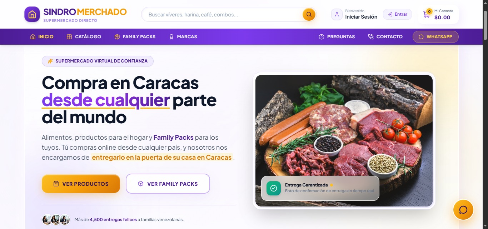
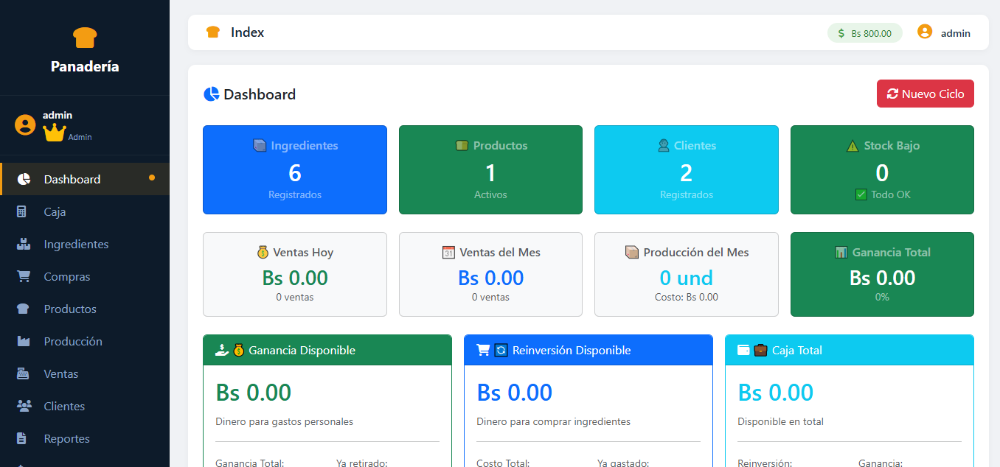
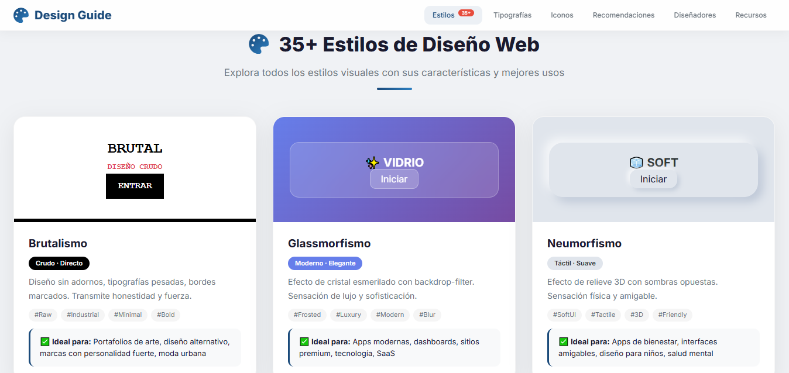

🔒 PrivadoSindroMerchado
Sistema de supermercado online con 6 microservicios en PHP puro. API Gateway, autenticación por API Key y bases de datos separadas.
Ver arquitectura
Código privado

✅ En ProducciónSistema de Panadería
CRUD que mi papá usa a diario para calcular costos, ganancias y precios de venta. En uso real todos los días.
Código privado
🌐 Público
Beep Jesus Pro v3.0.1
Script en Bash que convierte MIDI a frecuencias para el buzzer de Linux. "La Gata Bajo la Lluvia" al encender mi PC.
 ✅ En Producción
✅ En Producción
Dra. Victoria
Sitio web médico con modales, mapa de ubicación y botones de WhatsApp con mensajes predefinidos.

🔒 PersonalGuía de Estilos de Diseño
Archivo HTML local con 35 estilos (Glassmorfismo, Dadá, Neumorfismo, etc.), librerías de iconos, tipografías y paletas de colores.
Uso personal
 🖥️ Infraestructura
🖥️ Infraestructura
Servidor Local LAMP + Samba
Servidor con 1GB de RAM configurado con LAMP, Samba y Cockpit. Edito desde Windows, ejecuto en Linux.